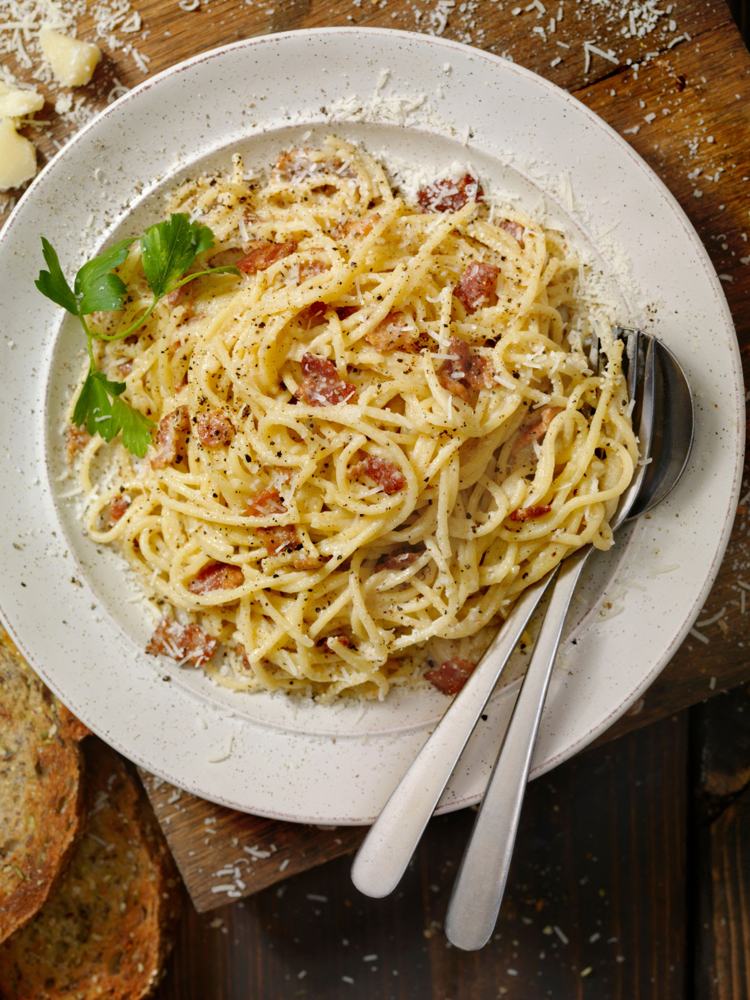

Carbonara

Description
One of the most iconic Italian recipes
The original wants Guanciale and Pecorino Cheese but here some alternatives for that ingredients
Ingredients
- Pasta, better if use pennette or spaghetti
- Pancetta or Guanciale
- Eggs
- Parmesan or Pecorino
- Salt
- Pepper,best if grinded on spot
Steps
- Put water on fire and while waiting the water to boil for the pasta continue with the other steps
- Cut the pancetta in cube, put in a pan and light the fire at minimum power, you have to wait that the fat on the pancetta start to melt, dont worry if some parts of the fat dont melt
- Pick a bowl, crack the eggs on the bowl, of course toss away the shells,optimal number of eggs are 1:100g of pasta
- whip the eggs, remember to check if the water is boiling if is boiling put the pasta in it and take care of pancetta, if it's starts to burn, light off the fire.
- Now return at bowl with the whipped eggs, pick the cheese of choice and the hand grater, grate the cheese, whip again the egg and cheese souce, repeat if the souce is still most liquid
- Add the powder pepper on the egg souce,if you dont like it you can skip this.
- if the pasta is al dente, dry the water,if you want the cream to be more creamy, pick a little of the water which cooked the pasta
- light again the fire under the pancetta and put the cooked pasta in it, for about 2 minutes while you stir the pasta in the pancetta
- if you decided to pick the water, now it's the time to put with the pasta and the pancetta, if not skip this
- after the fat of the pancetta sit well on the pasta, pick the bowl with the carbonara souce and pour the souce on the pasta,light off the fire
- it's important to do this away from the fire or the egg souce will cook and solidify to much, in this step you just have to stir well the pasta with the rests of the thing in the pan
Return